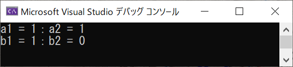
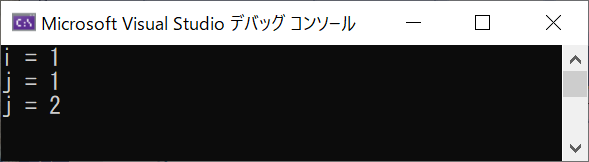
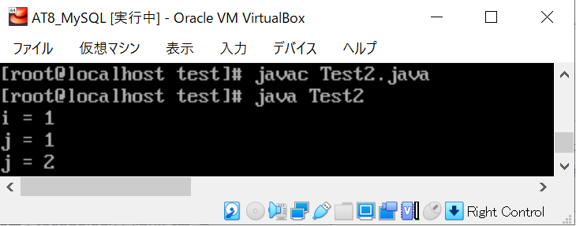
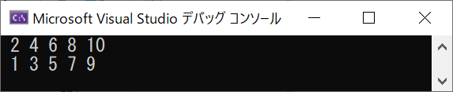

メモ：インクリメント/デクリメントの前置と後置
インクリメントとデクリメントの、
前置（prefix）と、後置（postscript）での挙動の違いを忘れがちなのでメモ
なんでもいいんだけど、C言語でテスト
デクリメントでも結果は同じなので、テストはインクリメントのみ
test.c
test.c の実行結果

前置 → インクリメントしてから処理（この場合は代入）
後置 → 処理（この場合は代入）してからインクリメント
単独で行うなら、前置きでも後置きでも結果は一緒
他の処理と組み合わせた時に注意が必要になる
例えば、下記のようにfor文で条件式に使うと結果が変わる
test2.c
test2.c の実行結果

前置 → インクリメントしてから条件式の判定をしているので、ループは １ 回
後置 → 条件式の判定をしてからインクリメントしているので、ループは ２ 回
一応、C++ と java でも確認しておく
test2.cpp
test2.cpp の実行結果
Test2.java
Test2.java の実行結果

特殊な場合以外には影響がなさそうだが、だからこそどこかで足を掬われることになるかもしれないので覚えておきたい
C++ で while バージョンも追加
test3.cpp
test3.cpp の実行結果

参考になったサイト
前置きと後置き